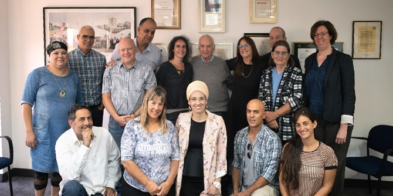

מר מורטון מנדל, יו"ר קרן מנדל, נפגש עם עמיתי תוכנית מנדל למנהיגות אזורית בירוחם וברמת הנגב לשיעור שעסק במקומם של חזון וערכים כבסיס למנהיגות מצוינת החותרת להוביל שינויים משמעותיים בחברה ובנגב. מר מנדל הדגיש באוזני המשתתפים את המחויבות שלו ושל הקרן לחיזוקה של ישראל, דרך פיתוח מנהיגים מעולים, ערכיים ואנושיים, בעלי רצון ורוח לחולל שינוי.

המשתתפים הציגו לפני מר מנדל את הלמידה המעמיקה שחוו לאורך תוכנית ההכשרה, שבה ערכו בירור ערכים וזהות, לימוד פילוסופי מעמיק ועוד. כמו כן תיארו את העשייה המנהיגותית שהם מובילים בנגב, ושיתפו באתגרים החברתיים והכלכליים שעמם הם מתמודדים בתחומי החינוך, הקהילה, התעסוקה, התיירות ועוד. ד"ר עדי ניר שגיא, מנהלת מרכז מנדל למנהיגות בנגב, בירכה על ההזדמנות ללמוד ולקיים שיח מעורר השראה.
שיעור זה חתם מסע למידה בן שנתיים בתוכנית ההכשרה למנהיגות, שמנהליה הם
ד"ר יצחק (קיקי) אהרונוביץ' וד"ר נועה מילמן. העמיתים הודו למר מנדל על המפגש המרגש והמעמיק, ומר מנדל ביקש מכל אחד ואחת מהם להמשיך לפעול, להעביר את זה הלאה לסביבה, ולהפוך צעד אחר צעד את הנגב למקום טוב יותר ומשגשג יותר למען תושביו.

{kind=link}